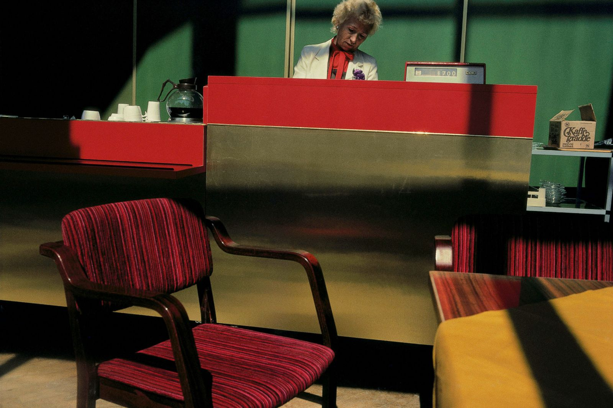
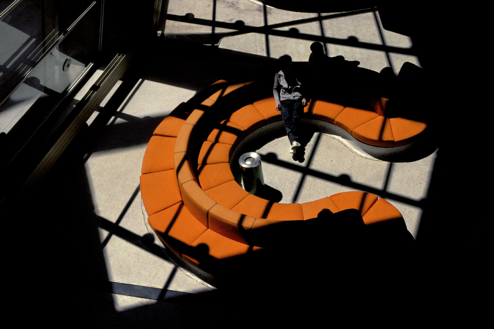

He was very concerned about the quality of black-and-white images, so at first he decided to experiment with inkjet printing. The best shades that he managed to discover were reflected in his films. Digital printing opened up new possibilities for him, bringing Gruyer one step closer to his original aspiration, and the use of color meant for him the assertion of true existence. It's hard to find anything about Harry Gruyer without mentioning the word "color". The radical environment of Belgium in the 1970s certainly influenced the formation of his work and career: Gruyer's black-and-white works were last presented during a closed show at the European House of Photography in Paris. Although color can attract, but the main intention of Gruyer when creating a photo is the moment of narration.
 | Place | Year |
| Ostend, Belgium | 1988 |
| Imilchil, Morocco | 1986 |
|